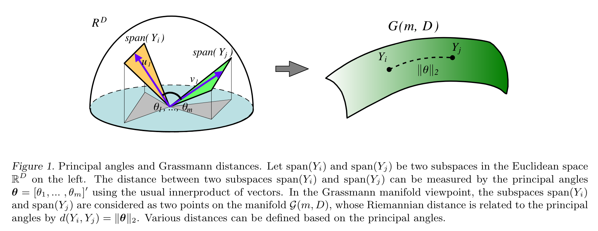

Distance Between Subspaces
在机器学习研究中，我们有时会遇到以“一个集合的向量”而非“一个向量”为基本元素的问题，为此需要定义这些向量集合之间的距离。特别地，如果允许我们直接考虑每个向量集合张成的线性子空间，那么问题就变成了如何度量两个线性子空间之间的距离。
具体而言，设 \(a_1,\ldots,a_k\in\mathbb R^n\) 和 \(b_1,\ldots,b_k\in\mathbb R^n\) 是两个线性无关向量组 (\(1\leq k<n\))，分别张成 \(k\) 维子空间： \[ \mathcal A=\text{span}\{a_1,\ldots,a_k\}\subset\mathbb R^n,\quad\mathcal B=\text{span}\{b_1,\ldots,b_k\}\subset\mathbb R^n \] 我们希望寻求一个度量 \(d(\mathcal A,\mathcal B)\) 来衡量子空间 \(\mathcal A\) 和 \(\mathcal B\) 之间的距离。
Principal Angles
当 \(n=2,k=1\) 时，\(\mathcal A,\mathcal B\) 是二维平面上过原点的直线，那么一个自然的想法就是用直线间的夹角作为距离度量： \[ d(\mathcal A,\mathcal B)=\theta,\quad\text{where }\cos\theta=a^\mathsf Tb\;(\Vert a\Vert=\Vert b\Vert=1) \] 受此启发，当 \(n>2\) 时，我们先在 \(\mathcal A,\mathcal B\) 中分别找一个方向，使得夹角尽可能小（点积尽可能大）： \[ \begin{align} \max\quad& a_1^\mathsf Tb_1\\ \text{s.t.}\quad&a_1\in \mathcal A,\,b_1\in \mathcal B\\ &\Vert a_1\Vert=\Vert b_1\Vert=1 \end{align} \] 记最优解为 \(a_1^\ast,b_1^\ast\). 接下来再分别找一个方向，使得夹角尽可能小，但要求与前一个方向正交： \[ \begin{align} \max\quad& a_2^\mathsf Tb_2\\ \text{s.t.}\quad& a_2\in \mathcal A,\,b_2\in \mathcal B\\ &\Vert a_2\Vert=1,\,a_2^\mathsf Ta_1^\ast=0\\ &\Vert b_2\Vert=1,\,b_2^\mathsf Tb_1^\ast=0 \end{align} \] 以此类推，我们不断地找与已知方向正交的、夹角最小的方向： \[ \begin{align} \max\quad&a_j^\mathsf Tb_j\\ \text{s.t.}\quad& a_j\in \mathcal A,b_j\in \mathcal B\\ &\Vert a_j\Vert=1,\,a_j^\mathsf Ta_1^\ast=\cdots=a_j^\mathsf Ta_{j-1}^\ast=0\\ &\Vert b_j\Vert=1,\,b_j^\mathsf Tb_1^\ast=\cdots=b_j^\mathsf Tb_{j-1}^\ast=0\\ \end{align} \] 这样定义了 \(k\) 个优化问题。记它们的最优解分别为 \(a_1^\ast,b_1^\ast,\ldots,a_k^\ast,b_k^\ast\)，则每一对解之间的夹角为： \[ \theta_j=\arccos\left({a_j^\ast}^\mathsf T b_j^\ast\right),\quad j=1,\ldots,k \] 称这些夹角 \(0\leq\theta_1\leq\cdots\leq\theta_k\leq\pi/2\) 为 principal angles.
可以看见，principal angles 的概念与 PCA 中的 principal components 非常类似，而在计算上也同样可以通过奇异值分解完成。具体而言，设 \(a_1,\ldots,a_k\) 和 \(b_1,\ldots,b_k\) 分别是子空间 \(\mathcal A,\mathcal B\) 中的单位正交基（否则可事先进行 Gram-Schmidt 正交化），记： \[ A=[a_1,\ldots,a_k]\in\mathbb R^{n\times k},\quad B=[b_1,\ldots,b_k]\in\mathbb R^{n\times k} \] 则 \(A,B\) 均为正交矩阵，即满足 \(A^\mathsf TA=B^\mathsf TB=I\). 于是第一个优化问题可以改写作： \[ \begin{align} \max\quad& (Ax_1)^\mathsf T(By_1)\\ \text{s.t.}\quad&\Vert Ax_1\Vert=\Vert By_1\Vert=1 \end{align} \] 根据正交性，\(A,B\) 不改变向量的长度，因此问题等价于： \[ \begin{align} \max\quad& x_1^\mathsf TA^\mathsf TBy_1\\ \text{s.t.}\quad&x_1^\mathsf Tx_1=y_1^\mathsf Ty_1=1 \end{align} \] 定义拉格朗日函数： \[ L(x_1,y_1,\lambda_1,\mu_1)=x_1^\mathsf TA^\mathsf TBy_1-\lambda_1(x_1^\mathsf Tx_1-1)-\mu_1(y_1^\mathsf Ty_1-1) \] 对 \(x_1,y_1\) 求导并令为零： \[ \begin{gather} \dfrac{\partial L}{\partial x_1}=A^\mathsf TBy_1-2\lambda_1 x_1=0\\ \dfrac{\partial L}{\partial y_1}=B^\mathsf TAx_1-2\mu_1 y_1=0\\ \end{gather} \] 整理得： \[ \begin{gather} A^\mathsf TBy_1=2\lambda_1 x_1\\ B^\mathsf TAx_1=2\mu_1 y_1 \end{gather} \] 这意味着 \(x_1,y_1\) 是 \(A^\mathsf TB\) 的左、右奇异向量，或 \(B^\mathsf TA\) 的右、左奇异向量，\(2\lambda_1=2\mu_1\) 是对应奇异值。此时优化目标为： \[ x_1^\mathsf TA^\mathsf TBy_1=x_1^\mathsf T(2\lambda_1x_1)=2\lambda_1 \] 因此 \(2\lambda_1\) 应取为最大奇异值，\(\theta_1=\arccos(2\lambda_1)\) 是第一个 principal angle.
类似地，第二个优化问题可写作： \[ \begin{align} \max\quad& (Ax_2)^\mathsf T(By_2)\\ \text{s.t.}\quad&\Vert Ax_2\Vert=\Vert By_2\Vert=1\\ &(Ax_2)^\mathsf T(Ax_1)=(By_2)^\mathsf T(By_1)=0 \end{align} \] 这等价于： \[ \begin{align} \max\quad& x_2^\mathsf TA^\mathsf TBy_2\\ \text{s.t.}\quad&x_2^\mathsf Tx_2=y_2^\mathsf Ty_2=1\\ &x_2^\mathsf Tx_1=y_2^\mathsf Ty_1=0 \end{align} \] 定义拉格朗日函数： \[ L(x_2,y_2,\lambda_2,\mu_2,\lambda_{12},\mu_{12})=x_2^\mathsf TA^\mathsf TBy_2-\lambda_2(x_2^\mathsf Tx_2-1)-\mu_2(y_2^\mathsf Ty_2-1)-\lambda_{12} x_2^\mathsf Tx_1-\mu_{12} y_2^\mathsf Ty_1 \] 对 \(x_2\) 求导并令为零：
\[ \begin{gather} \dfrac{\partial L}{\partial x_2}=A^\mathsf TBy_2-2\lambda_2x_2-\lambda_{12} x_1=0\\ A^\mathsf TBy_2=2\lambda_2x_2+\lambda_{12}x_1 \end{gather} \] 上式左乘 \(x_1^\mathsf T\)，得： \[ \lambda_{12}=x_1^\mathsf TA^\mathsf TBy_2=(B^\mathsf TAx_1)^\mathsf Ty_2=(2\mu_1y_1)^\mathsf Ty_2=0 \] 故而： \[ A^\mathsf TBy_2=2\lambda_2x_2 \] 这意味着 \(x_2,y_2\) 是 \(A^\mathsf TB\) 的左、右奇异向量，\(2\lambda_2\) 是对应奇异值。此时优化目标为： \[ x_2^\mathsf TA^\mathsf TBy_2=x_2^\mathsf T(2\lambda_2x_2)=2\lambda_2 \] 因此 \(2\lambda_2\) 应取为次大奇异值，\(\theta_2=\arccos(2\lambda_2)\) 是第二个 principal angle.
以此类推，第 \(k\) 个优化问题的最优解就是第 \(k\) 大的奇异值，也即第 \(k\) 个 principal angle 的余弦值。
事实上，对于熟悉矩阵求导的读者，上述问题可以直接写作： \[ \begin{align} \max\quad&\text{tr}(X^\mathsf TA^\mathsf TBY)\\ \text{s.t.}\quad&X^\mathsf TX=I,\;Y^\mathsf TY=I \end{align} \] 其中 \(X=(x_1,\ldots,x_k)\in\mathbb R^{k\times k},Y=(y_1,\ldots,y_k)\in\mathbb R^{k\times k}\). 引入拉格朗日乘子 \(M,N\in\mathbb R^{k\times k}\)，构造拉格朗日函数： \[ L(X,Y,M,N)=\text{tr}(X^\mathsf TA^\mathsf TBY)-\text{tr}(M^\mathsf T(X^\mathsf TX-I))-\text{tr}(N^\mathsf T(Y^\mathsf TY-I)) \] 对 \(X\) 求导并令为零： \[ \begin{gather} \nabla_XL=A^\mathsf TBY-XM-XM^\mathsf T=0_{k\times k}\\ A^\mathsf TBY=X(M+M^\mathsf T) \end{gather} \] 注意 \(M+M^\mathsf T\) 是实对称矩阵，可以分解为 \(M+M^\mathsf T=P\Lambda P^\mathsf T\)，其中 \(P\) 是正交矩阵，\(\Lambda\) 是对角阵。于是有： \[ \begin{gather} A^\mathsf TBY=XP\Lambda P^\mathsf T\\ A^\mathsf TB(YP)=(XP)\Lambda \end{gather} \] 这意味着 \(XP,YP\) 各列是 \(A^\mathsf TB\) 的左右奇异向量，\(\Lambda\) 对角线上是对应的奇异值。此时优化目标为： \[ \text{tr}(X^\mathsf TA^\mathsf TBY)=\text{tr}((XP)^\mathsf TA^\mathsf TB(YP))=\text{tr}(\Lambda) \] 也即所有奇异值之和。这与顺序求解得到的结论相同。
综上所述，要计算 principal angles，只需对 \(A^\mathsf TB\in\mathbb R^{k\times k}\) 做奇异值分解： \[ A^\mathsf TB=U(\cos\Theta)V^\mathsf T \] 其中 \(\cos\Theta=\text{diag}(\cos\theta_1,\ldots,\cos\theta_k)\) 且 \(\theta_1\leq\cdots\leq\theta_k\)，则这些 \(\theta_1,\ldots,\theta_k\) 就是 principal angles.
Distances for Subspaces
从泛函分析的角度看，要定义子空间的距离，也就是要构造一个由线性子空间为基本元素的度量空间。具体而言，定义 Grassmann manifold 为 \(\mathbb R^n\) 上所有 \(k\) 维线性子空间构成的集合： \[ \text{Gr}(k,n)=\{k\text{-dim linear subspaces of }\mathbb R^n\} \] 那么任意两个 \(k\) 维子空间 \(\mathcal A,\mathcal B\) 都是 \(\text{Gr}(k,n)\) 中的两个元素。然后在该集合上定义一个合法的距离度量即可： \[ d:\text{Gr}(k,n)\times\text{Gr}(k,n)\to\mathbb R,\quad(\mathcal A,\mathcal B)\mapsto d(\mathcal A,\mathcal B) \]

基于上一节计算的 principal angles，我们可以定义出很多合法的距离度量，列举如下：
- Grassmann distance: \(d(\mathcal A,\mathcal B)=\left(\sum_{i=1}^k\theta_i^2\right)^{1/2}\).
- Asimov distance: \(d(\mathcal A,\mathcal B)=\theta_k\).
- Binet-Cauchy distance: \(d(\mathcal A,\mathcal B)=\left(1-\prod_{i=1}^k\cos^2\theta_i\right)^{1/2}\).
- Chordal distance: \(d(\mathcal A,\mathcal B)=\left(\sum_{i=1}^k\sin^2\theta_i\right)^{1/2}\).
- Fubini-Study distance: \(d(\mathcal A,\mathcal B)=\cos^{-1}\left(\prod_{i=1}^k\cos\theta_i\right)\).
- Martin distance: \(d(\mathcal A,\mathcal B)=\left(\log\prod_{i=1}^k1/\cos^2\theta_i\right)^{1/2}\).
- Procrustes distance: \(d(\mathcal A,\mathcal B)=2\left(\sum_{i=1}^k\sin^2(\theta_i/2)\right)^{1/2}\).
- Projection distance: \(d(\mathcal A,\mathcal B)=\sin\theta_k\).
- Spectral distance: \(d(\mathcal A,\mathcal B)=2\sin(\theta_k/2)\).
特别地，对于一些距离，我们甚至无需进行奇异值分解即可计算。例如，对于 Chordal distance，有： \[ d(\mathcal A,\mathcal B)=\left(\sum_{i=1}^k\sin^2\theta_i\right)^{1/2}=\left(\sum_{i=1}^k\left(1-\cos^2\theta_i\right)\right)^{1/2}=\left(\sum_{i=1}^k\left(1-\sigma_i^2\right)\right)^{1/2}=\left(k-\sum_{i=1}^k\sigma_i^2\right)^{1/2}=\left(k-\Vert A^\mathsf TB\Vert_F^2\right)^{1/2} \] 因此直接计算 \(A^\mathsf TB\) 的 F 范数（所有元素的平方和）就够了，非常方便。
Different Dimensions
截至目前，我们假设 \(\mathcal A\) 和 \(\mathcal B\) 具有相同的维度 \(k\)，但如果 \(\mathcal A,\mathcal B\) 维度不同（不妨设 \(\mathcal A\) 比 \(\mathcal B\) 维度更小）该怎么办呢？一个想法是：将 \(\mathcal A\) “膨胀”后再与 \(\mathcal B\) 比较，或者将 \(\mathcal B\) “缩减”后再与 \(\mathcal A\) 比较。
具体而言，设 \(\mathcal A\) 是 \(\mathbb R^n\) 中的 \(k\) 维子空间而 \(B\) 是 \(l\) 维子空间，其中 \(1\leq k\leq l\leq n\)，即： \[ \mathcal A\in\text{Gr}(k,n),\quad\mathcal B\in\text{Gr}(l,n),\quad1\leq k\leq l\leq n \] 定义 Schubert varieties 为： \[ \begin{align} \Omega_+(\mathcal A)&=\{\mathcal P\in\text{Gr}(l,n)\mid \mathcal A\subseteq\mathcal P\}\\ \Omega_-(\mathcal B)&=\{\mathcal P\in\text{Gr}(k,n)\mid \mathcal P\subseteq\mathcal B\} \end{align} \] 例如，一条直线的 \(\Omega_+\) 可以是包含这条直线的所有平面；反过来，一个平面的 \(\Omega_-\) 可以是该平面包含的所有直线。
于是 \(\Omega_+(\mathcal A)\) 与 \(\mathcal B\) 之间的距离可以定义为： \[ \delta_+(\mathcal A,\mathcal B)=\min\{d(\mathcal P,\mathcal B)\mid\mathcal P\in\Omega_+(\mathcal A)\} \] 类似的，\(\mathcal A\) 与 \(\Omega_-(\mathcal B)\) 之间的距离可以定义为： \[ \delta_-(\mathcal A,\mathcal B)=\min\{d(\mathcal A,\mathcal P)\mid\mathcal P\in\Omega_-(\mathcal B)\} \] 文献 (Ye-Lim, 2016) 证明： \[ \delta_+(\mathcal A,\mathcal B)=\delta_-(\mathcal A,\mathcal B)=\left(\sum_{i=1}^{\min(k,l)}\theta_i^2\right)^{1/2} \] 其中： \[ A^\mathsf TB=U(\cos\Theta)V^\mathsf T,\quad \Theta=\text{diag}\left(\theta_1,\ldots,\theta_{\min(k,l)},\pi/2,\ldots,\pi/2\right),\quad \theta_1\leq\cdots\leq\theta_{\min(k,l)} \] 因此即便 \(\mathcal A,\mathcal B\) 维度不同，也可以通过奇异值分解计算二者的距离。但需要说明的是，此时 \(\delta(\mathcal A,\mathcal B)\) 已经不满足距离的性质了。例如，当 \(\mathcal A\subset \mathcal B\) 时，有 \(\delta(\mathcal A,\mathcal B)=0\)，不满足正定性，进而不满足三角不等式。
References
- Hamm, Jihun, and Daniel D. Lee. Grassmann discriminant analysis: a unifying view on subspace-based learning. In Proceedings of the 25th international conference on Machine learning, pp. 376-383. 2008. ↩︎
- Ye, Ke, and Lek-Heng Lim. Schubert varieties and distances between subspaces of different dimensions. SIAM Journal on Matrix Analysis and Applications 37, no. 3 (2016): 1176-1197. ↩︎
- Lek-Heng Lim. distances between objects of different dimensions. link ↩︎